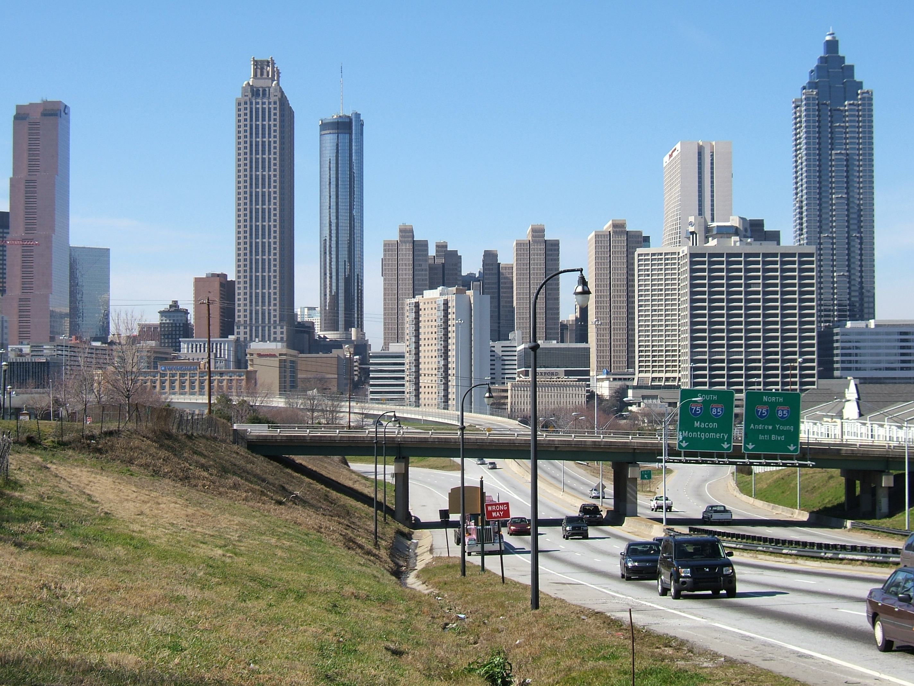

Background

Kraasch, Reinhard. “190 Atlanta, GA.JPG.” Wikimedia Commons, 2 Apr. 2017, commons.wikimedia.org/wiki/File:190_Atlanta,_GA.JPG.
A little bit more about me! As I said, I am from Atlanta, Georgia. I love the city and I spent the first 18 years of my life there. I wrote Atlanta on my mail all through highschool but now technically where my home is considered to be the new city of Brookhaven. I love the city. Atlanta has inspired me to aim to live in a city the rest of my life. I hope to live again in Atlanta one day, though Washington D.C. and New York both seem nice too.
My love for Atlanta is also one of the reasons I choose to attend college in Athens. I didn't want a small college town, and out of the college towns available, Athens was one of the largest in scale. Athens' proximity to Atlanta is also very attractive. I enjoy the occasional non game weekend heading back to Atlanta with my friends. Athens' proximity also allows for the possibility for summer internships in Atlanta which is also great in the process of building my career.
A Table of My Favorite things in Atlanta
| Food | Activities |
|---|---|
|
|
Atlanta is also the home of my highschool! Click here to read more about Holy Innocents'HIES Click here to return to home page. Home